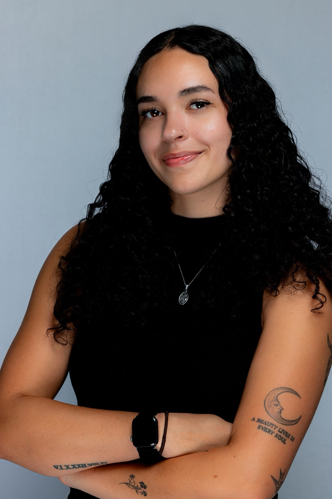
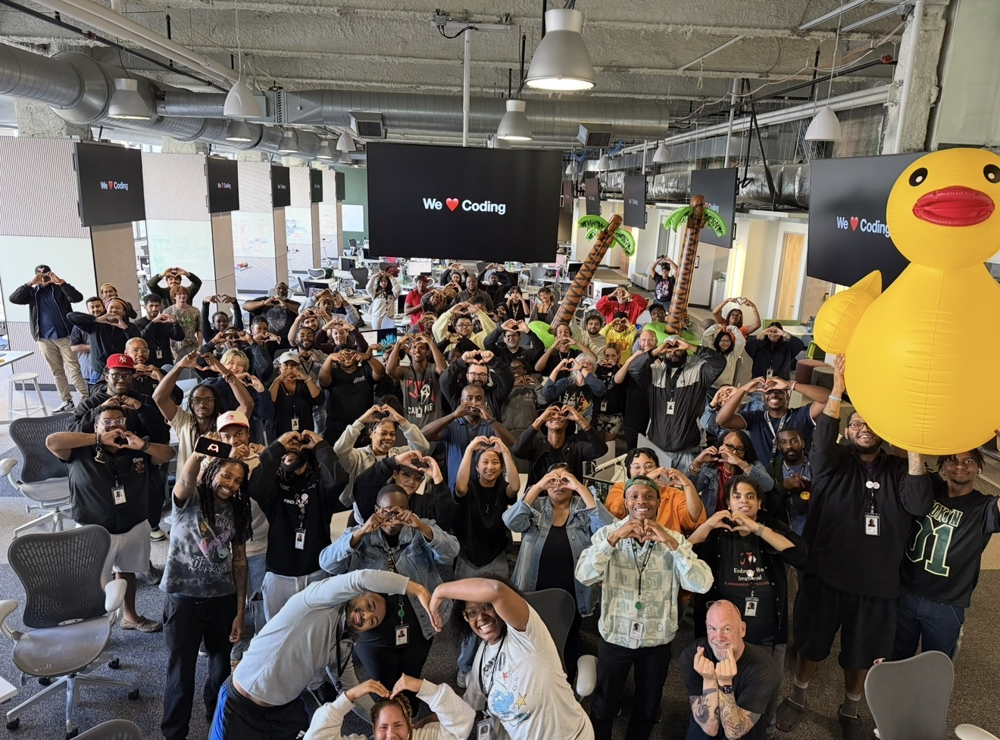
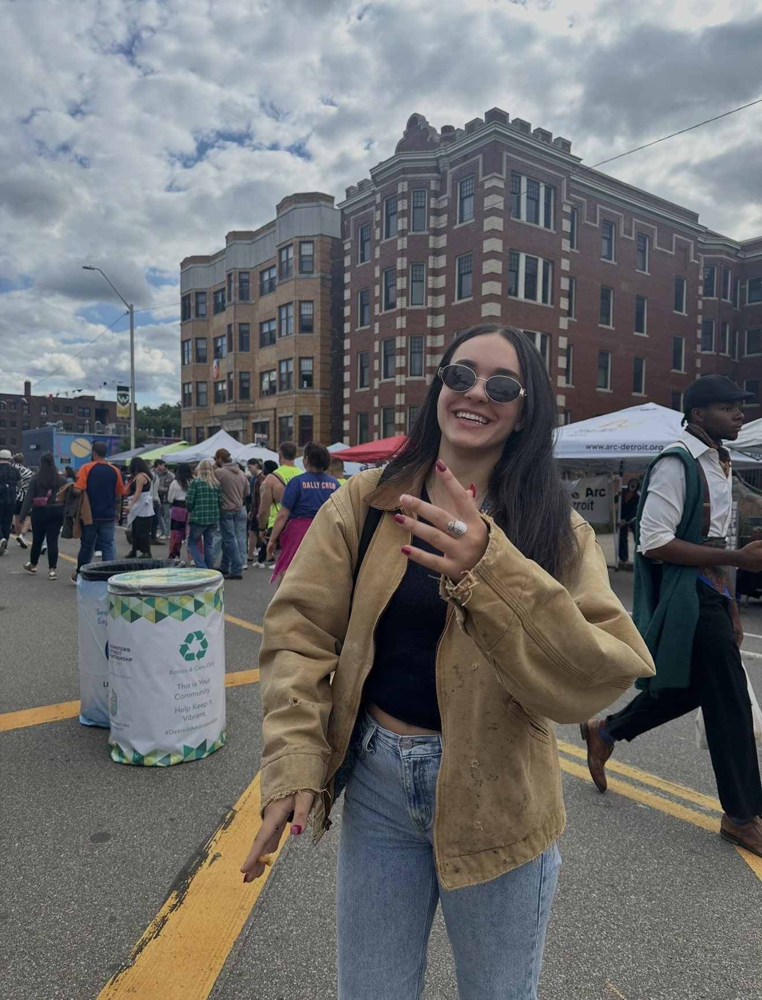
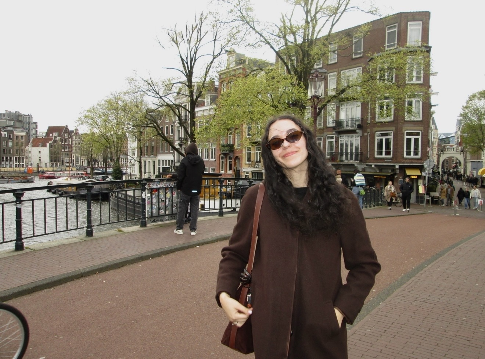

About
I'm Isabel — a product designer based in Detroit, currently a UX/UI Design Mentor at the Apple Developer Academy | MSU.
My path into tech was non-traditional: immersive, project-based programs rather than a design degree. That shaped how I work. I move through the design thinking process properly — empathising with users through research, defining the real problem, then prototyping and testing before calling anything final. I care as much about the process as the outcome, which is why the case studies on this site spend more time on the problem than on the pixels.
I bring AI tools like Claude into that process for research, ideation, and feedback — as an accelerant for the thinking, not a replacement for it.
Beyond the world of pixels, I enjoy connecting with friends, exploring new design concepts, and collaborative work that pushes boundaries. Usually with a dog nearby.




Jul 2025 — Current
Served as a DRI (Directly Responsible Individual) owning a 5-week challenge cycle — content sequencing, stakeholder communication, guest speaker logistics, and delegation across a 17-person team supporting 200 learners. Built the academy's user research and usability testing practices, helping translate insights into design decisions within the Challenge Based Learning framework. Restructured challenge sequencing by analysing four cohort years of curriculum roadmaps, and screened 100+ candidates for the incoming cohort.
Apr — Jun 2025
Designed and delivered an 80-hour curriculum covering the end-to-end UX process — research, wireframing, prototyping, and basic coding — for students building original app concepts. Guided students through iterative design and feedback to refine user flows and interface decisions.
Oct 2024 — Jan 2026
Designed a cohesive brand identity and visual content system, applying consistent style choices across all content. Used performance analytics to drive iterative content decisions — growing post views by 2.3M, profile views by 7,675, and followers by 2.5K.
2025
Apple Teacher · Apple Developer Academy | MSU, Renaissance Program
2025
Anthropic — Claude 101
2024
2022
Liberal Arts